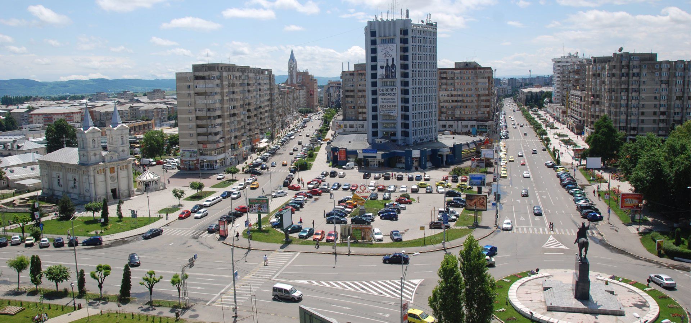
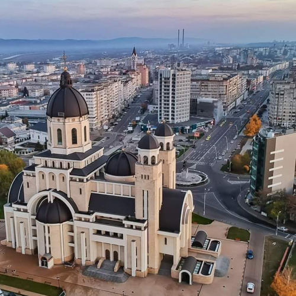

 Bacău supranumit și „orașul lui Bacovia” este municipiul de reședință al județului cu același nume, Moldova, România. Este situat pe râul Bistrița, pe care în oraș există două centrale hidroelectrice (Bacău I și Bacău II) ce acoperă o parte a consumului local de energie electrică. Suprafața municipiului este de 43 km², iar populația este de 144.307 de locuitori (2011). Orașul este traversat de drumurile europene E85 și E574 ce fac legătura cu Bucureștiul, cu nordul țării și cu Transilvania. Pe calea feroviară legăturile naționale și internaționale se realizează prin rețeaua CFR. Bacăul dispune de un aeroport internațional ce asigură curse regulate către diferite destinații naționale și europene.
Istoricul Nicolae Iorga a fost de părere că denumirea orașului Bacău este de origine maghiară, precum numele Adjudului și Sascutului. Expresia a-și găsi Bacăul, cu semnificația a da de bucluc, a fost explicată de Bogdan Petriceicu Hasdeu ca fiind o aluzie la neplăcerile pe care odinioară le făcea călătorilor importanta vamă din Bacău, centru vamal pentru tot ce intra din Muntenia și T ransilvania. După Cihac, II, 477 (cf. Weigand, Jb., XVI, 75), numele provine din limba maghiară bakó „călău”. După DER, este vorba cu mai multă probabilitate de o contaminare a ambelor cuvinte, fiind o interpretare umoristică a numelui orașului, prin intermediul cuvântului din limba maghiară.
La sfârșitul secolului al XIX-lea, printre bătrânii orașului și ceangăi, în special din satele Călugăra-Mare și Luizi-Călugăra, încă mai circula legenda conform căreia în documentele vechi ale pământurilor lor ar fi existat un Bako, maghiar din Călugăra care a fugit în Ungaria, dând numele târgului. Acesta fiind prins în Ungaria și condamnat la moarte, a putut scăpa de pedeapsă dacă accepta să devină călău – vezi bakó la Wikționar – (obicei menținut până în secolul al XIX-lea în Rusia). După expirarea termenului, acesta a putut să se întoarcă în Moldova. Ulterior, și-a deschis o crâșmă pe drumul spre Roman, cunoscută drept „crâșma lui Bako”, devenind un repe. Ion Antonescu a ordonat la data de 6 martie 1943 cu adresa nr. 116.212 efectuarea lucrărilor pentru românizarea nomenclaturii localităților din județele Moldovei în cadrul uniformizării localităților din România, ordin prin care urma să se schimbe denumirea orașului Bacău, în Gura Bistriței. Vizate de schimbări erau și alte localități din județ: Asău, Agăș, Tamași, Pustiana și altele.
Istoricul Nicolae Iorga a fost de părere că denumirea orașului Bacău este de origine maghiară, precum numele Adjudului și Sascutului.[7] Expresia a-și găsi Bacăul, cu semnificația a da de bucluc, a fost explicată de Bogdan Petriceicu Hasdeu ca fiind o aluzie la neplăcerile pe care odinioară le făcea călătorilor importanta vamă din Bacău, centru vamal pentru tot ce intra din Muntenia și Transilvania. După Cihac, II, 477 (cf. Weigand, Jb., XVI, 75), numele provine din limba maghiară bakó „călău”. După DER, este vorba cu mai multă probabilitate de o contaminare a ambelor cuvinte, fiind o interpretare umoristică a numelui orașului, prin intermediul cuvântului din limba maghiară.[8] La sfârșitul secolului al XIX-lea, printre bătrânii orașului și ceangăi, în special din satele Călugăra-Mare și Luizi-Călugăra, încă mai circula legenda conform căreia în documentele vechi ale pământurilor lor ar fi existat un Bako, maghiar din Călugăra care a fugit în Ungaria, dând numele târgului. Acesta fiind prins în Ungaria și condamnat la moarte, a putut scăpa de pedeapsă dacă accepta să devină călău – vezi bakó la Wikționar – (obicei menținut până în secolul al XIX-lea în Rusia). După expirarea termenului, acesta a putut să se întoarcă în Moldova. Ulterior, și-a deschis o crâșmă pe drumul spre Roman, cunoscută drept „crâșma lui Bako”, devenind un reper.[9] Ion Antonescu a ordonat la data de 6 martie 1943 cu adresa nr. 116.212 efectuarea lucrărilor pentru românizarea nomenclaturii localităților din județele Moldovei în cadrul uniformizării localităților din România, ordin prin care urma să se schimbe denumirea orașului Bacău, în Gura Bistriței. Vizate de schimbări erau și alte localități din județ: Asău, Agăș, Tamași, Pustiana și altele
 Piatra de temelie a fost pusă în 1991 de către PS Episcop Ioachim Vasluianul. Construcția, cu o suprafață la sol de 1,706 m², are o lungime totală de 70 m, o lățime de 38 m și o înălțime maximă de 70 m (63 m la baza crucii de pe turla principală, crucea principală având 7 m înălțime).[1] Fundația începe de la 10 metri sub pământ, cu un subsol ce cuprinde două niveluri. Cel mai de jos nivel găzduiește o sală de expoziție, un depozit de carte, și un adăpost de apărare locală antiaeriană. Următorul nivel este un paraclis, după care, la cota 0 începe biserica propriu-zisă, cu ziduri de beton care ating în anumite tronsoane o grosime de un metru.[2] Cupola din naos are o deschidere de 24 de metri.[3] Cele 18 clopote cu care este dotată biserica, cu o greutate între 30 de kilograme și 4,5 tone, au fost fabricate la Innsbruck. Dintre acestea, 13 sunt concepute cu o formă specială. Ele sunt sincronizate de computere, putând astfel să redea circa 1000 de melodii diferite, specifice anumitor momente din timpul anului bisericesc. Celelalte 5 sunt clopote clasice.[2] Biserica în 2019 Crucea principală, cea mai mare din țară, are 7 metri înălțime, o deschidere a brațelor laterale de 4,20 metri, și o greutate de aproape 2 tone. Celelalte trei cruci, montate pe turlele care adăpostesc clopotele catedralei, au câte 4 metri înălțime și deschiderea brațelor de 2,46 metri.